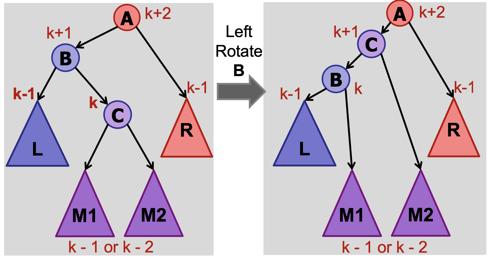

Data Structures and Algorithm
Recurrence Relations
- T(n) = T(n-1) + O(1) = O(n)
- T(n) = T(n/2) + O(1) = O(logn)
- T(n) = T(n-1) + O(n) = O(n^2)
- T(n) = T(n-1) + O(nk) = O(n^(k+1))
- T(n) = 2T(n/2) + O(n) = O(nlogn)
- T(n) = T(n/2) + O(n) = O(n)
- T(n) = 2T(n/2) + O(1) = O(n)
- T(n) = 2T(n-1) + O(1) = O(2^n)
Binary Search
- Time complexity: O(logn)
- Preconditions:
- Array is of size n
- Array is sorted
- Postconditions:
- If element is in array:
A[left] = key
- If element is in array:
- Loop invariant:
A[left] <= key <= A[right]- (right - left) <= n/2^k in iteration k
public int search(int A[], int key, int n) {
int left = 0;
int right = n - 1;
while (left < right) {
// int mid = (left + right) / 2 can lead to integer overflow
int mid = left + (right - left) / 2;
if (key <= A[mid]) {
right = mid;
} else {
left = mid + 1;
}
}
return (A[left] == key ? left : -1);
}
Peak Finding
- Output a local maximum in A, where A[i - 1] <= A[i] and A[i + 1] <= A[i]
- Time complexity: O(logn)
-
Invariant:
- If we recuse in the right half, then there exists a peak in the right half
- There exists a peak in the range [begin, end]
- Every peak in [begin, end] is a peak in [1, n]
-
T(n) = T(n/2) + θ(1) = O(logn)
public int findPeak(int A[], int n) {
// if right of mid is larger, recurse on right
if (A[n / 2 + 1] > A[n / 2]) {
return findPeak(Arrays.copyOfRange(A, n / 2 + 1, n + 1), n / 2)
// if left of mid is larger, recurse on left
} else if (A[n / 2 - 1] > A[n / 2]) {
return findPeak(Arrays.copyOfRange(A, 0, n / 2), n / 2)
} else {
return n / 2;
}
}
Sorting
BubbleSort
- Invariant:
- At the end of iteration i, the biggest j items are correctly sorted in the final j positions of the array.
- Best: O(n), when array is already sorted
- Worst: O(n^2), when array is reverse sorted
- Stable
- Description:
- For n loops, if A[j] > A[j + 1], swap(A[j], A[j + 1])
void bubbleSort(int arr[], int n) {
int i, j, temp;
boolean swapped;
for (i = 0; i < n - 1; i++) {
swapped = false;
for (j = 0; j < n - i - 1; j++) {
if (arr[j] > arr[j + 1]) {
// Swap arr[j] and arr[j+1]
temp = arr[j];
arr[j] = arr[j + 1];
arr[j + 1] = temp;
swapped = true;
}
}
// If no two elements were
// swapped by inner loop, then break
if (swapped == false)
break;
}
}
SelectionSort
- Invariant:
- At the end of iteration j: the smallest j items are correctly sorted in the first j positions of the array.
- Best: O(n^2)
- Worst: O(n^2)
- Not stable
- Description:
- For n loops, find minimum element A[j] in A[j..n], swap(A[j], A[k])

void selectionSort(int arr[], int n) {
int min_idx = 0;
// One by one move boundary of unsorted subarray
for (int i = 0; i < n - 1; i++) {
// Find the minimum element in unsorted array
min_idx = i;
for (int j = i + 1; j < n; j++) {
if (arr[j] < arr[min_idx])
min_idx = j;
}
// Swap the found minimum element with the first element
if (min_idx != i)
swap(arr[min_idx], arr[i]);
}
}
InsertionSort
- Invariant:
- At the end of iteration j: the first j items in the array are in sorted order.
- Best: O(n), when array is already sorted
- Worst: O(n^2), when array is reverse sorted
- Stable
- Description:
- For n loops, insert key into the sorted array A[1 .. j - 1]

void insertionSort(int arr[]) {
int n = arr.length;
for (int i = 1; i < n; ++i) {
int key = arr[i];
int j = i - 1;
/* Move elements of arr[0..i-1], that are
greater than key, to one position ahead
of their current position */
while (j >= 0 && arr[j] > key) {
arr[j + 1] = arr[j];
j = j - 1;
}
arr[j + 1] = key;
}
}
MergeSort
- Best:
O(n logn) - Worst:
O(n logn) - Stable
- Memory:
O(n logn) - Description:
- Divide: split array into two halves
- Recurse: sort the two halves
- Combine: merge the two sorted halves

- Use InsertionSort instead for n < 1024
void merge(int arr[], int l, int m, int r) {
// Find sizes of two subarrays to be merged
int n1 = m - l + 1;
int n2 = r - m;
// Create temp arrays
int L[] = new int[n1];
int R[] = new int[n2];
// Copy data to temp arrays
for (int i = 0; i < n1; ++i)
L[i] = arr[l + i];
for (int j = 0; j < n2; ++j)
R[j] = arr[m + 1 + j];
// Merge the temp arrays
// Initial indices of first and second subarrays
int i = 0, j = 0;
// Initial index of merged subarray array
int k = l;
while (i < n1 && j < n2) {
if (L[i] <= R[j]) {
arr[k] = L[i];
i++;
}
else {
arr[k] = R[j];
j++;
}
k++;
}
// Copy remaining elements of L[] if any
while (i < n1) {
arr[k] = L[i];
i++;
k++;
}
// Copy remaining elements of R[] if any
while (j < n2) {
arr[k] = R[j];
j++;
k++;
}
}
void mergeSort(int arr[], int l, int r) {
if (l < r) {
// Find the middle point
int m = l + (r - l) / 2;
// Sort first and second halves
mergeSort(arr, l, m);
mergeSort(arr, m + 1, r);
// Merge the sorted halves
merge(arr, l, m, r);
}
}
QuickSort
- Invariant:
- At the end of every loop iteration,
- For every i < low: B[i] < pivot
- For every j > high: B[j] > pivot
- Best:
O(n logn), when median element is chosen as pivot - Worst:
O(n^2), when first element is chosen as pivot/ all elements are the same - Not stable
- Description:

- Divide: Partition the array into two sub-arrays around a pivot x such that elements in lower subarray ≤ x ≤ elements in upper sub-array.
- Conquer: Recursively sort the two sub-arrays.
- Combine: Trivial, do nothing.
void quickSort(int[] arr, int low, int high) {
if (low < high) {
// pi is partitioning index, arr[pi]
// is now at right place
int pi = partition(arr, low, high);
// Separately sort elements before
// partition and after partition
quickSort(arr, low, pi - 1);
quickSort(arr, pi + 1, high);
}
}
Partition
- Invariant:
- A[high] > pivot at the end of each loop
- At the end of every loop iteration
- For all i >= high, A[i] > pivot
- For all 1 < j < low, A[j] < pivot
- Time complexity:
O(n)
int partition(int[] arr, int low, int high) {
// Choosing the pivot
int pivot = arr[high];
// Index of smaller element and indicates
// the right position of pivot found so far
int i = (low - 1);
for (int j = low; j <= high - 1; j++) {
// If current element is smaller than the pivot
if (arr[j] < pivot) {
// Increment index of smaller element
i++;
swap(arr, i, j);
}
}
swap(arr, i + 1, high);
return (i + 1);
}
QuickSelect
- Invariant:
- After partioning, arr[partition] is now at right place
- Time complexity:
O(n) - Description: Find the k-th smallest element in an unordered list
- partition the array
- if partition is at position k, the partition is the k-th smallest element
- else continue searching in the correct half
// ASSUMPTION: all elements in arr[] are distinct
int kthSmallest(int[] arr, int low,
int high, int k) {
// find the partition
int partition = partition(arr, low, high);
// if partition value is equal to the kth position, return value at k
if (partition == k - 1) {
return arr[partition];
}
// if partition value is less than kth position, search right side of the array
else if (partition < k - 1) {
return kthSmallest(arr, partition + 1, high, k);
}
// if partition value is more than kth position, search left side of the array
else {
return kthSmallest(arr, low, partition - 1, k);
}
}
HeapSort?
Trees
Binary Search Trees
- All in left sub-tree < key < all in right sub-tree
Height
- Number of edges on longest path from root to leaf
h(v) = 0(if v is a leaf)h(v) = max(h(v.left), h(v.right)) + 1- Time complexity:
O(logn)
int height() {
int leftHeight = -1;
int rightHeight = -1;
if (leftTree != null) {
leftHeight = leftTree.height();
}
if (rightTree != null) {
rightHeight = rightTree.height();
}
return max(leftHeight, rightHeight) + 1;
}
Search
- Worst case:
O(n), (when n = h) -
Time complexity:
O(h) -
searchMax()
TreeNode searchMax() {
if (rightTree != null) {
return rightTree.searchMax();
} else {
return this;
}
}
- searchMin()
TreeNode searchMin() {
if (leftTree != null) {
return leftTree.searchMin();
} else {
return this;
}
}
- search(int queryKey)
public TreeNode search(int queryKey){
if (queryKey < key) {
if (leftTree != null) {
return leftTree.search(key);
} else {
return null;
}
} else if (queryKey > key) {
if (rightTree != null) {
return rightTree.search(key);
} else {
return null;
}
} else {
return this; // Key is here!
}
}
Insert
void insert(int insKey, int intValue) {
if (insKey < key) {
if (leftTree != null) {
leftTree.insert(insKey);
} else {
leftTree = new TreeNode(insKey,insValue)
}
} else if (insKey > key) {
if (rightTree != null) {
rightTree.insert(insKey);
} else {
rightTree = new TreeNode(insKey, insValue);
}
} else {
return; // Key is already in the tree!
}
}
Traversals
Inorder Traversal
- Left, self, right
- Running time:
O(n)
void inOrder(Node node) {
if (node == null)
return;
// First recur on left child
inOrder(node.left);
// Then print the data of node
System.out.print(node.key + " ");
// Now recur on right child
inOrder(node.right);
}
Preorder Traversal
- Self, left, right
- Running time:
O(n)
void preOrder(Node node) {
if (node == null)
return;
// Print the data of node
System.out.print(node.key + " ");
// Then recur on left child
preOrder(node.left);
// Now recur on right child
preOrder(node.right);
}
Postorder Traversal
- Left, right, self
- Running time:
O(n)
void postOrder(Node node) {
if (node == null)
return;
// First recur on left child
postOrder(node.left);
// Then recur on right child
postOrder(node.right);
// Now print the data of node
System.out.print(node.key + " ");
}
Delete
- Successor
- Running time:
O(h) - Idea:
- Search for key in the tree.
- If (result > key), then return result.
- If (result <= key), then search for successor of result.
- Case 1: node has a right child
- Case 2: node has no right child
- Running time:
public TreeNode successor() {
if (rightTree != null) {
return rightTree.searchMin();
}
TreeNode parent = parentTree;
TreeNode child = this;
while ((parent != null) && (child == parent.rightTree)) {
child = parent;
parent = child.parentTree;
}
return parent;
}
- Delete
- Running time:
O(h) - Case 1: no children
- Remove v
- Case 2: 1 child
- Remove v
- Connect child(v) to parent(v)
- Case 3: 2 children
- x = successor(v)
- Delete(x)
- Remove v
- Connect x to left(v), right(v), parent(v)
- Running time:
Balanced Trees
- BST is balanced if
h = O(logn) - All operations run in
O(logn)time - Maxmimum height:
h < 2logn -
Mininimum nodes:
n > 2^(h/2) -
In every node v, store height (augment)
- On insert and delete, update height:
height = max(left.height, right.height) + 1
- On insert and delete, update height:
-
Define Invariant
- A node v is height-balanced if
|v.left.height - v.right.height| <= 1 - A BST is height-balanced if every node is height-balanced
- A node v is height-balanced if
-
Maintain balance
// assume v has left != null
void rightRotate(TreeNode v) {
TreeNode w = v.left;
w.parent = v.parent;
v.parent = w;
v.left = w.right;
w.right = v;
}
// assume v has right != null
void leftRotate(TreeNode v) {
TreeNode w = v.right;
w.parent = v.parent;
v.parent = w;
v.right = w.left;
w.left = v;
}
If v is out of balanced and left-heavy:
- Case 1: v.left is balanced -> rightRotate(v)
- Case 2: v.left is left-heavy -> rightRotate(v)

- Case 3: v.left is right-heavy -> leftRotate(v.left), rightRotate(v)


If v is out of balanced and right-heavy:
- Case 1: v.right is balanced -> leftRotate(v)
- Case 2: v.right is left-heavy -> leftRotate(v)
- Case 3: v.right is right-heavy -> rightRotate(v.right), leftRotate(v)
import java.util.TreeSet;
TreeSet<IntegerNode> leftHalf;
TreeSet<IntegerNode> rightHalf;
public void rebalance() {
int leftSize = this.leftHalf.size();
int rightSize = this.rightHalf.size();
int diff = Math.abs(leftSize - rightSize);
if (diff > 1) {
if (leftSize > rightSize) {
// Left is bigger, move the biggest item to right
this.rightHalf.add(this.leftHalf.pollLast());
} else {
// Right is bigger, move the smallest item to left
this.leftHalf.add(this.rightHalf.pollFirst());
}
}
}